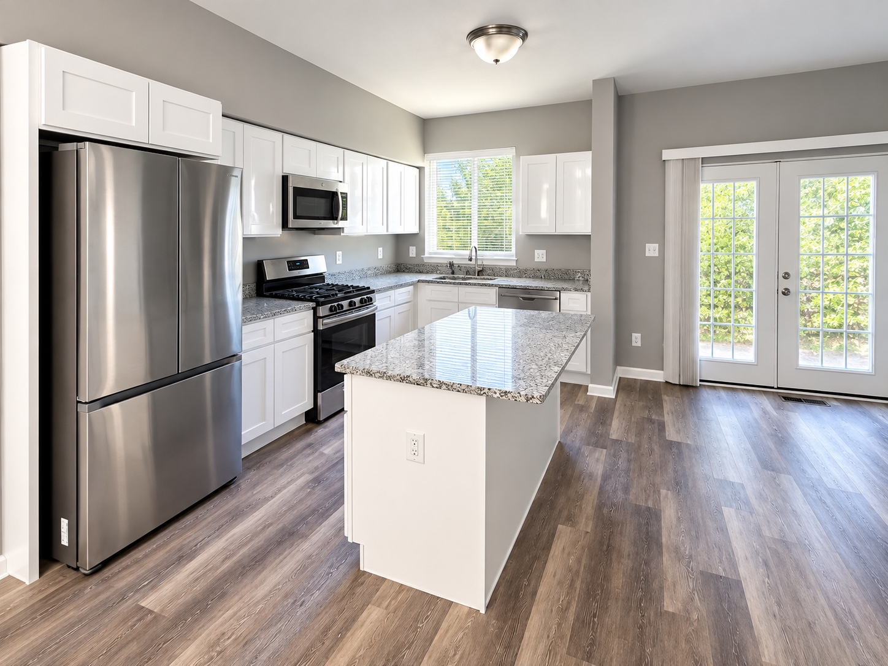

FEATURED PROJECT • BALTIMORE, MARYLAND
Francis Street
Full Residential Rehabilitation
THE PROJECT
From structural repairs to move-in ready.
Francis Street was a full residential rehabilitation that required work well beyond surface finishes. Improper basement framing had to be demolished and rebuilt from the ground up, while a roof leak required roof replacement and restoration of damaged framing and subfloor areas.
LA Core carried the property through structural repairs, interior reconstruction, flooring, kitchen installation, electrical improvements, exterior masonry and finish work to create the completed home shown here.
REBUILDING THE FOUNDATION OF THE FINISH
Correcting what was behind the walls.
The existing basement framing had been installed improperly, requiring demolition and complete reframing before the space could be rebuilt and finished. A roof leak had also caused structural damage, leading to roof replacement, framing restoration and replacement of damaged subfloor in multiple areas on the main and second levels.
Electrical work was completed to properly accommodate smoke and carbon-monoxide detectors as part of the rehabilitation.
INTERIOR TRANSFORMATION
Rebuilt. Finished. Ready.
The interior scope extended throughout the house, combining major repairs with the finish details that bring a completed rehabilitation together.
PROJECT SCOPE
One property.
A complete rehabilitation.
THE WORK BEHIND THE RESULT
Full rehabilitation from structure to finish.
Basement reframing, roof and structural repairs, subfloor replacement, electrical improvements, flooring, cabinetry, exterior masonry, deck repairs, capping and finish work were completed as part of the Francis Street rehabilitation.
FULL REHABS • RENOVATIONS • PROPERTY IMPROVEMENTS
Planning your next project?
Bring LA Core in from the repair stage through the final finish.
Request an Estimate